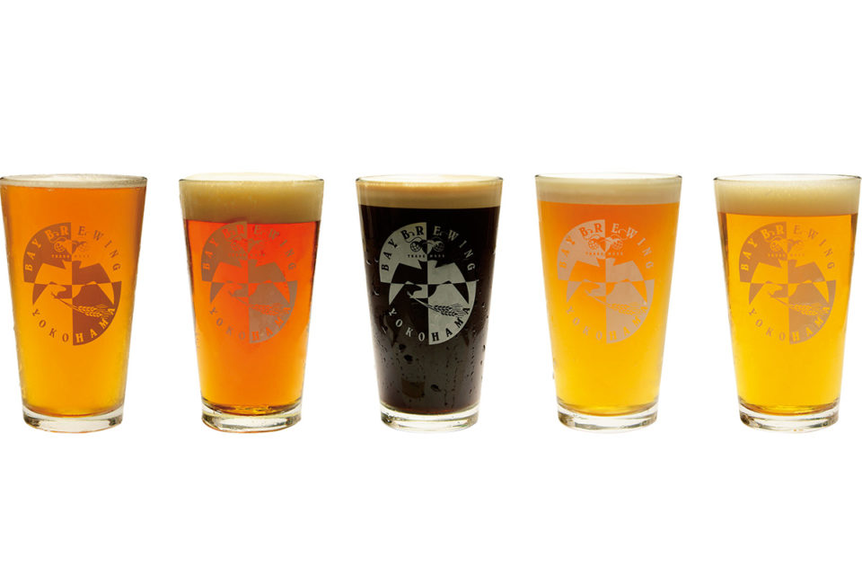
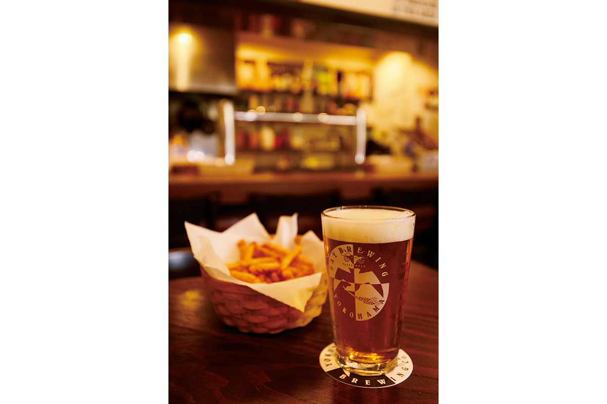
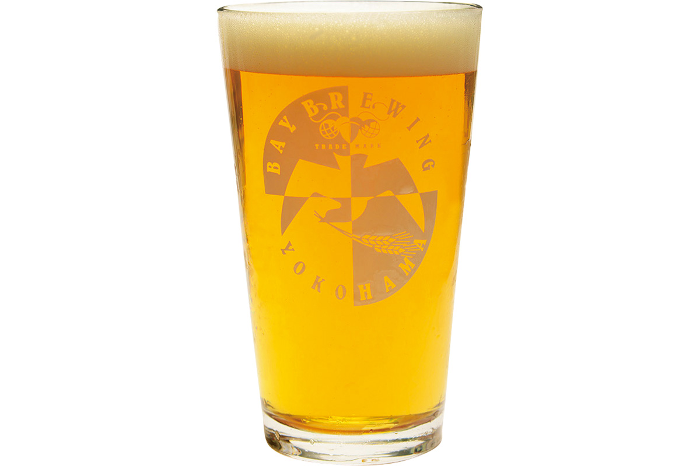
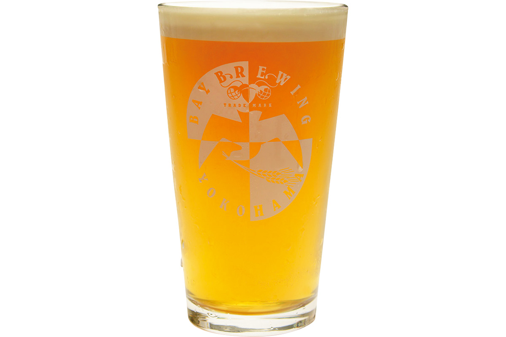
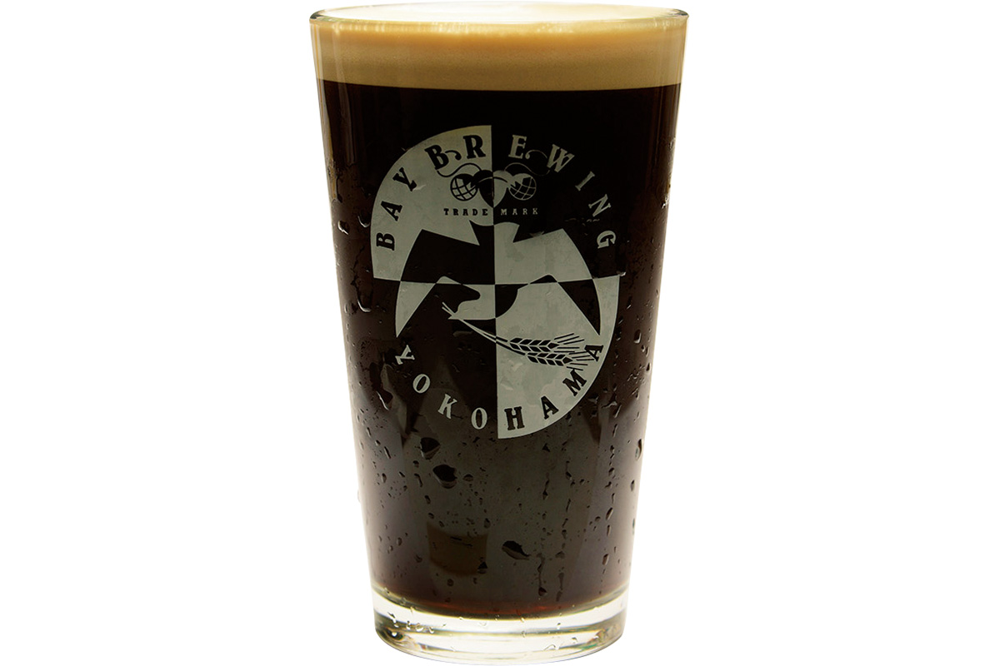
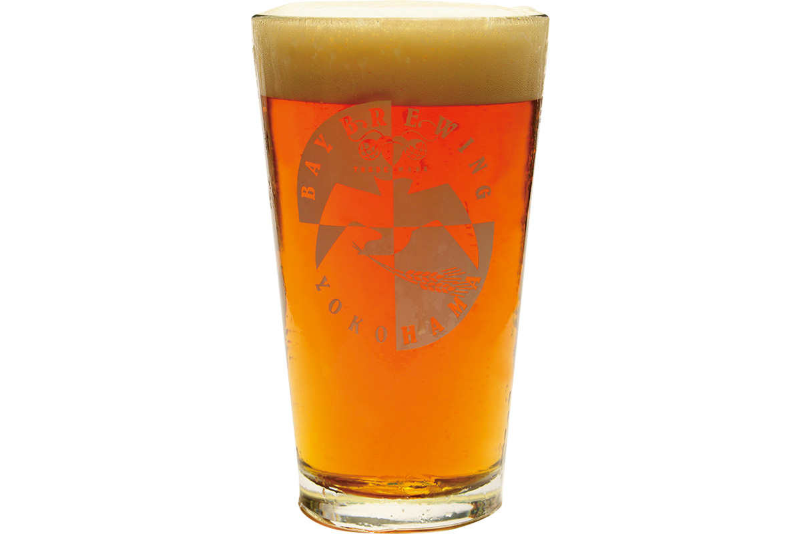
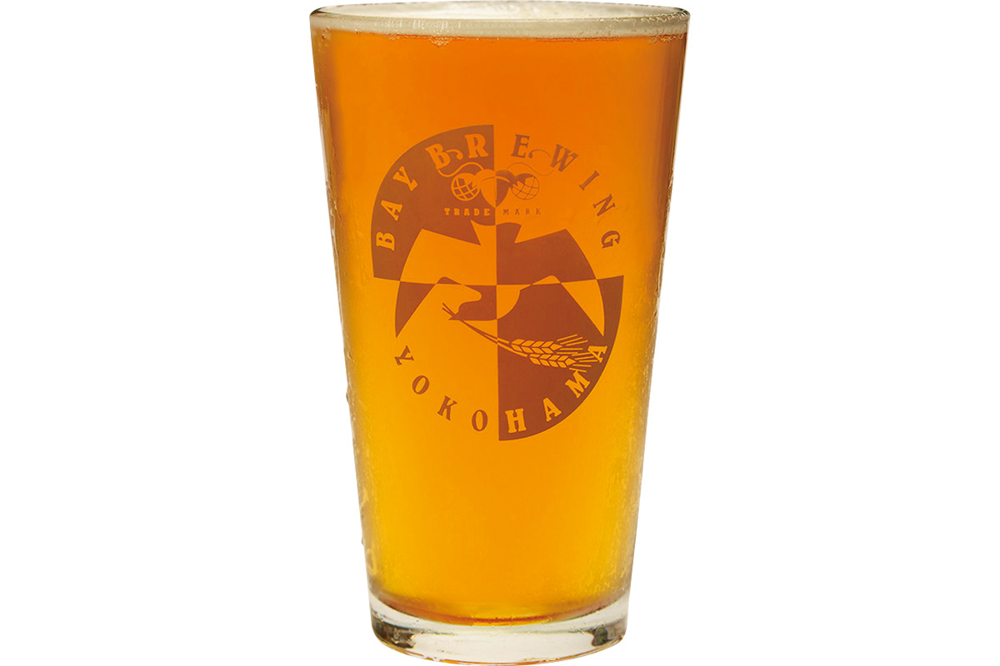

Префектура Канагава · Ёкогама, Каннай · пиво
Yokohama Bay Brewing: пилснер из Ёкогамы, который оценили в Чехии

В баре Yokohama Bay Brewing в ёкогамском квартале Каннай почти всегда людно, и в основном здесь сидят местные. Главное пиво бара, «Бэй пилснер», в 2014 году получило золото на конкурсе в Чехии, на родине самого стиля.
Пиво
Пилснер, сваренный втрое дольше
Главная причина, по которой сюда возвращаются, это «Бэй пилснер». У него красивый золотой цвет, глубокий аромат и лёгкий вкус: можно выпить несколько бокалов подряд и не устать.

Владелец пивоварни и её главный пивовар раньше руководил варкой в Yokohama Beer. Потом он уехал в Чехию, на родину «Пилснер Урквелл», с которого начался стиль пилснер, один из основных в мире пива. Там он освоил тройную декокцию. Это старинный способ: дроблёный солод заливают горячей водой, во время осахаривания часть затора переливают в отдельный котёл, кипятят и возвращают обратно, и так три раза.
Времени и сил это требует больше чем вдвое против обычного. Но пивовар был уверен, что настоящий вкус появляется только тогда, когда не жалеешь труда. Своего оборудования для такой варки не хватало, и он арендовал пивоварню в Готэмбе, в префектуре Сидзуока, чтобы продолжать опыты.
Труд окупился в феврале 2014 года: «Бэй пилснер» получил золото на крупнейшем пивном конкурсе Чехии. Пивоварня из Японии выступила со стилем, которому больше ста лет, и обошла и самих чехов, и других сильных соперников.
Бар
Что налить в Каннае
В баре подают «Бэй пилснер» и другое свежее пиво собственной варки, а также гостевые сорта других пивоварен. Каждую партию пивовары варят по новому рецепту, поэтому набор кранов меняется от сезона к сезону, и в этом отдельное удовольствие от новых визитов. Ниже пять сортов, которые наливали в 2020 году; каждый бокал стоил 900 иен с налогом.





Yokohama Bay Brewing, Каннай
- Адрес
- префектура Канагава, Ёкогама, район Нака, Фукутомитё-Хигасидори, 2-15, 1-й этаж
- Телефон
- +81 45-341-0450
- Часы работы
- 16:30–23:30, в субботу, воскресенье и праздники 13:00–23:30 (последний заказ еды 22:30, напитков 23:00)
- Выходные
- без выходных